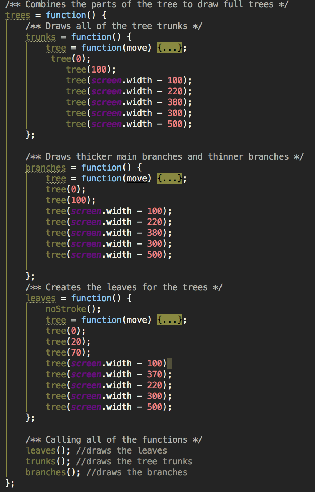
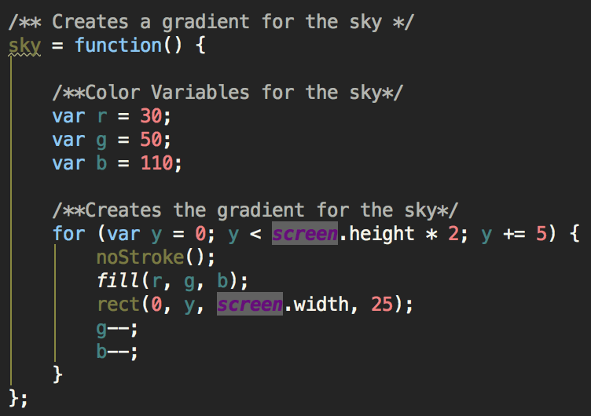
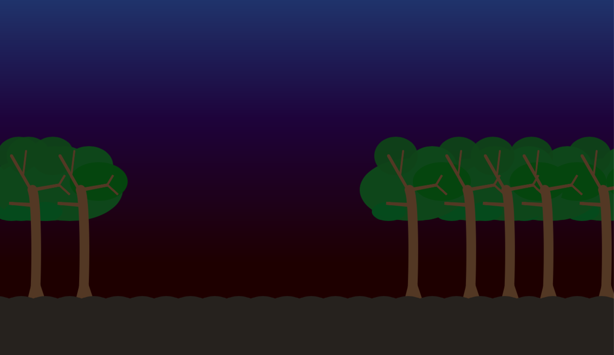
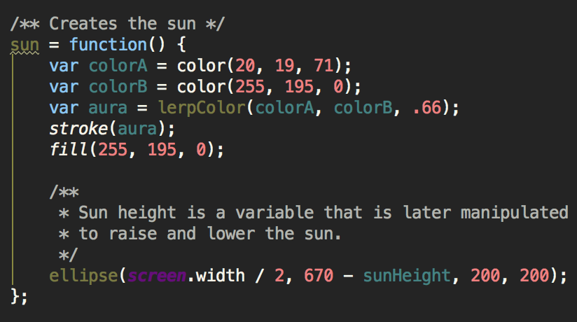
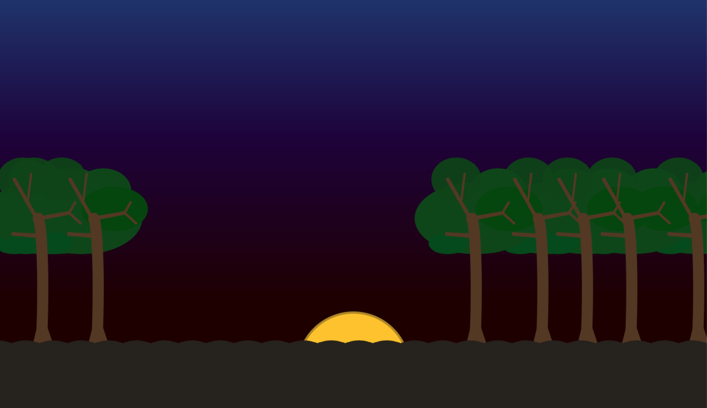
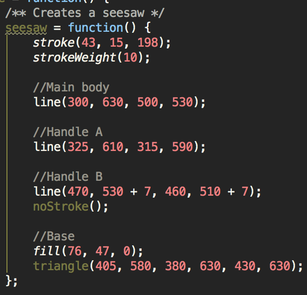
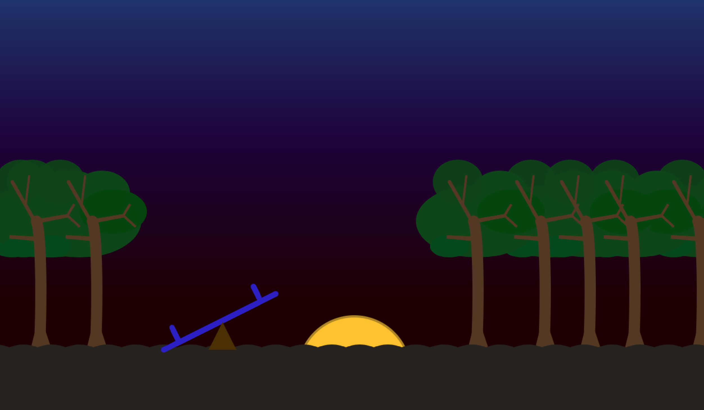
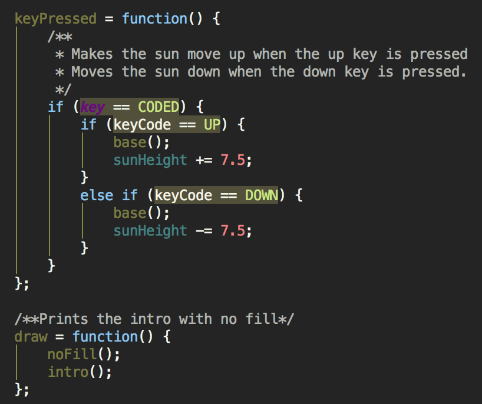
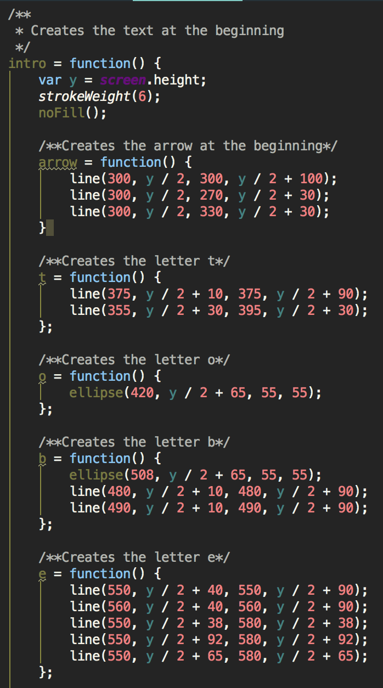

In this project, I used a JavaScript library called Processing.js. Processing.js is the sister project of Processing, a Java library. Both libraries were created for the purpose of creating and designing digital art using code.

The first thing that was needed was to set up the Processing.js environment. Due to the limitations of chromebooks, we used C9, a freeware coding environment. I also set up a GitHub repository in order to have a backup in case something happened. This repository also came in handy when I started working on this project at home. While c9 was definitely one of the best options for in-school work, I had better options when I was at home. When I worked at home, I used WebStorm, a JetBrains product. I chose this particular IDE because I frequently used its Java counterpart, IntelliJ, and because it has built-in VCS support, meaning that it was easy to set up integration for GitHub, which therefore allowed me to work in school, commit and push my code, and then pull it from home and continue work.


Then, I had to approach the project. What was I going to make, and how was I going to make it? I was inspired by two different things The first thing is the Visual Arts class was working on making landscapes. This drew my interest, because I remembered doing that project last year. The second thing was that in Minecraft, for one of the servers that I develop for, the builders’ current project was to build dozens of trees. This was what made me truly decide to work on making a landscape.

I first organized my workspace. Because I wanted to be able to change things and mess with things without breaking the entire project, I moved the Processing setup into a folder that I named ‘testing’. Here, I began to put the project together.


The first part of any landscape is the ground. I made a function specifically for the ground, calling it ground(). I decided that I wanted my ground to be slightly lumpy, and not completely straight. To do this, I first used a single ellipse shape to plot out the height and coordinates of the ground. An ellipse’s parameters are the x and y of its center, and the length and height of the ellipse. After I figured out the height of the circle, I placed this code inside of a for loop, and inside of this for loop, I increased the x value each time it ran, creating a long stretch of circles along the bottom of the page. After doing this, however, the circles were so close to each other that it looked like nothing more than just a straight line. Therefore, I changed the value of the incrementor to 50, which was a good level of spacing between the circles. At this point, the circles still had borders, so I got rid of the borders using the noStroke() function.


After I finished the ground, I decided to start working on my trees. After looking at the structure of a tree, I decided that the best method of organization would be to separate the trees into different functions. As I started work on the first base tree, I noticed that it was quite difficult to tell line and shape apart, so I split up the code even more, separating the first tree into three parts: trunk, branches, and leaves. The first part of this tree that I tackled was the trunk. This would turn out to be the hardest part of the tree to complete due to its curved shape. After I got the very basic shape down, I used variables to fine-tune the numbers. Finally, I got rid of the fill, and increased the stroke weight. This was done because the trunk itself was a bezier curve, which is, essentially, a curved line. I called the ground function and took a look. The tree trunk still didn’t look quite right to me. I pulled up a picture of a tree, and looked closely. Then, I realized it was because my tree trunk stayed the same width the entire length of it. To fix this, I used a triangle to make the trunk taper downwards.


Then, I started working on the tree branches. The majority of the branches were made of triangles. While I could have used lines for all of the branches, the tapered shape that the triangles provided had a nicer, more branch-like look that I preferred. I split up the larger, main branches that connected to the trunk, and the smaller branches that built off of that.


After this, I began work on the foliage. I placed all of the leaves in a function called “leaves”. My leaves were long ellipses that centered around each main branch. After I did these main leaves, I noted that my tree still looked quite bare. To fix this, I centered two larger ellipses over the entire top of the trees, and I gave them a lower transparency. Then, I varied the shades of green for the leaves.

Finally, now having a finished tree, I added the variable ‘move’ to certain parameters of the shape functions. Then, I added this variable as the parameter of the ‘tree’ function inside of each sectional function.
 The next thing that I decided to work on was the sky. For this, I knew that I wanted to use a gradient, but I didn’t just want to input an image. I thought about what makes up a gradient. A gradient is just bars of color that change as it goes from point A to point B. This is why I chose to create the gradient using the rect function. I originally started creating the rectangles by hand, decreasing the green and blue values of the fill. However, three rectangles in, I realized that manually creating each block by hand took a lot of time, and that there were only a few variables being manipulated. So instead, I made a for loop, which would decrease the green and blue values of the colors, turning the deep blue into a reddish color. Using a for loop also allowed me to get a much smoother gradient than I would have been able to achieve by hand.
The next thing that I decided to work on was the sky. For this, I knew that I wanted to use a gradient, but I didn’t just want to input an image. I thought about what makes up a gradient. A gradient is just bars of color that change as it goes from point A to point B. This is why I chose to create the gradient using the rect function. I originally started creating the rectangles by hand, decreasing the green and blue values of the fill. However, three rectangles in, I realized that manually creating each block by hand took a lot of time, and that there were only a few variables being manipulated. So instead, I made a for loop, which would decrease the green and blue values of the colors, turning the deep blue into a reddish color. Using a for loop also allowed me to get a much smoother gradient than I would have been able to achieve by hand.
 After this was done, I decided that my sky needed a sun. The first thing I did was I created a circle in the lower half of my page. I adjusted this circle till I felt that it was at an appropriate size. I used the fill function in order to color my sun. Then, I added a border, which was a mix between the blue of the background and the yellow of the sun, which created a nice aura effect.
 I was finished, but it still looked rather empty. I thought about what else could be found in a park-like area. I decided to make a small seesaw. The first part of this seesaw that I made was the main body of it. I took a line, and made it diagonal. Then, I placed the base of the seesaw, which was made using a triangle, directly in the center of the main body, and shifted it down until the tip of the triangle was at the lower half of the main body line. Then, I made two more smaller lines that served as handles.
The next thing I wanted to implement was a method of interaction. How could visitors manipulate the image? I thought about what in my image could be changed. Then it hit me. The sun could be lowered and raised! The first decision that I had to make in the implementation was what would trigger the raising and lowering of the sun? Well, the sun was moving up and down, so I decided to use the arrow keys as the triggers. I navigated to the Processing.js documentation, and I looked under the ‘Input’ section. Within this section of the documentation, there was a division for keyboard input. I decided that was what I needed. I first read about the keyPressed() function, but after looking through the documentation, I realized that this was not what I needed. I then looked at the more general system variable, key. Here, it stated that for detection of arrow keys, I needed the keyCode variable. It showed an example using an if/else statement, and I decided that I would use a similar format. The first thing I did was check if there was a key coded, which checked for the most recently pressed arrow key. Then, because I was doing the raising of the sun first, I checked if the key pressed was the up arrow key. If it was, I had it give me an alert. This was to debug, and check to make sure that the program was registering the keypress. After I checked that this worked, I thought about how I could move the sun up. I chose to add a variable, sunHeight, which would be added to or subtracted from the y parameter of the sun. I also had it draw the base image by calling the base() function, to make sure that the sun did not get drawn on top of other elements that it was supposed to be under. Then, I used an else if to check if the down arrow key was pressed. Now I had to select the float value that I would change the sun by. At first, I experimented with low values, around 1-2 pixels. I saw that this was much too slow, so I decided to increase it to 20px. Now, the sun jumped around in a glitchy fashion. I tried again, decreasing it to 10px. While this was much better, it was still much too fast. I decreased it down to 5px, and now it was going way too slow again. Therefore, I decided on a middle number of 7.5px, which turned out to be perfect.
Finally, I decided to write instructions to begin the program. This was necessary because to get the base image to draw, a visitor needed to press the up arrow key to call the base() function. At first, I took a look at the different text functions in Processing. Finding that these were hard to work with, and that I had plenty of time still, I decided to manually draw the letters. I did this with a variety of lines and ellipses. After a while, I saw that it was quite hard to read my code, so I created separate sections using comments. This made it much easier to understand, and to keep separate. I used y as a variable for screen.height to make it easier to type and to save time.